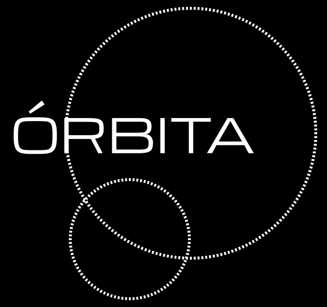

Órbita es una instalación museográfica interactiva que traduce el funcionamiento de los sistemas de recomendación musical en una experiencia corporal e inmersiva. Desarrollado como proyecto de título, integra investigación con usuarios y un marco de Inteligencia Artificial Explicable (XAI), y fue validado a través de tres ciclos de prototipado y testeo con usuarios reales.